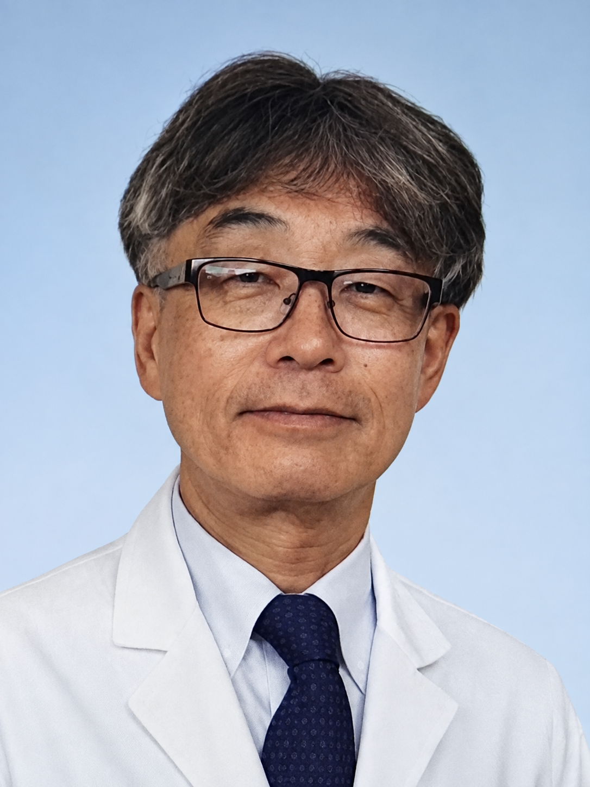
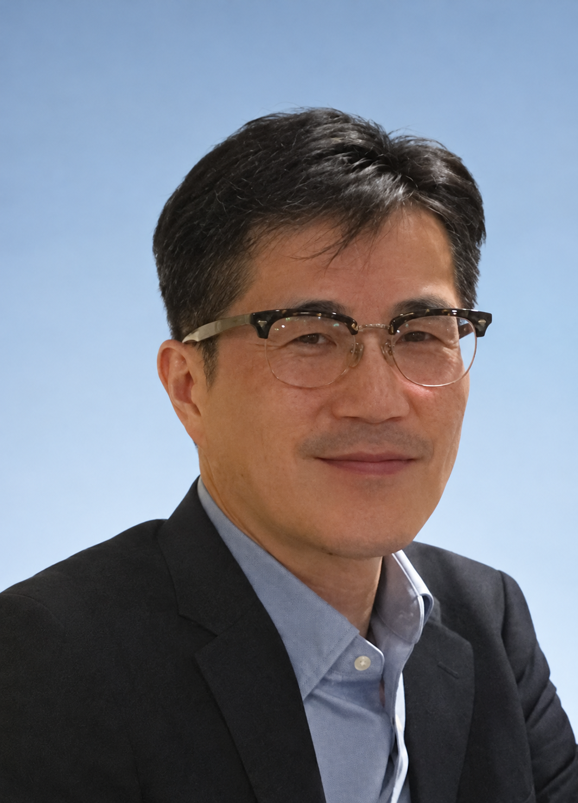
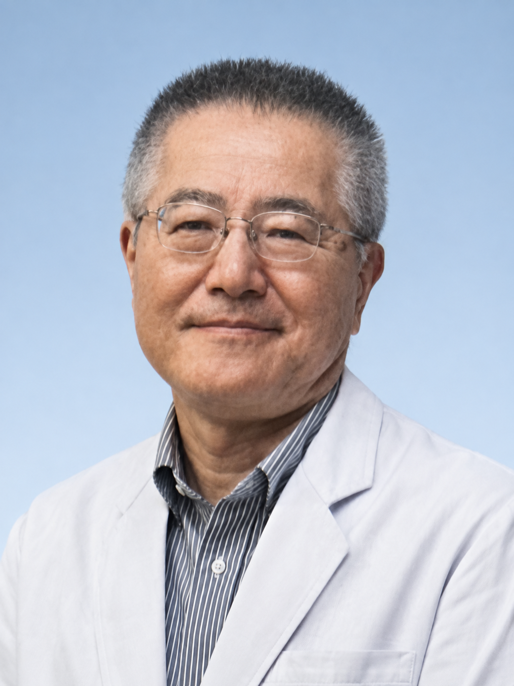
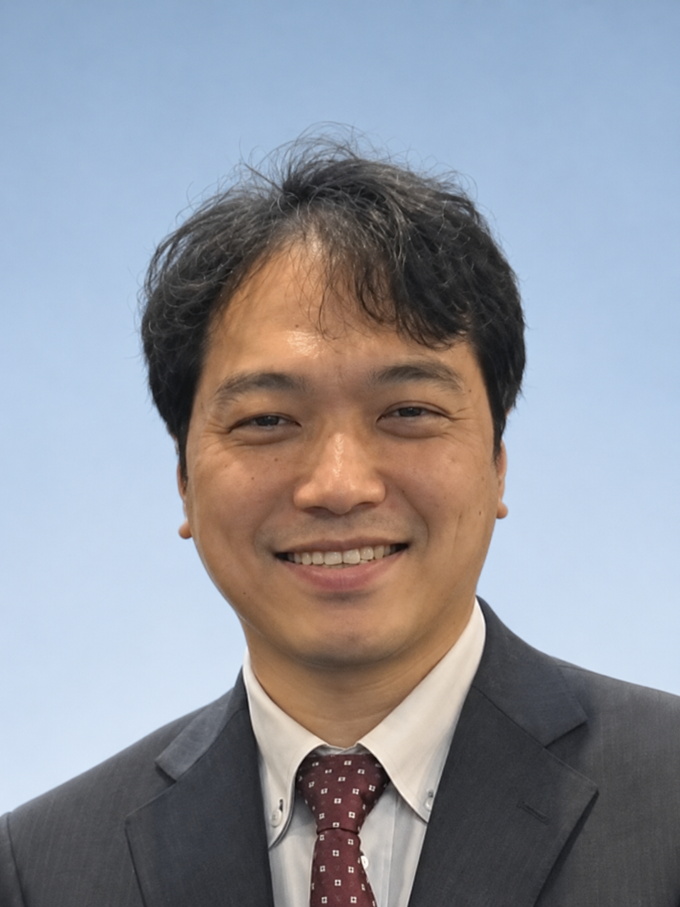
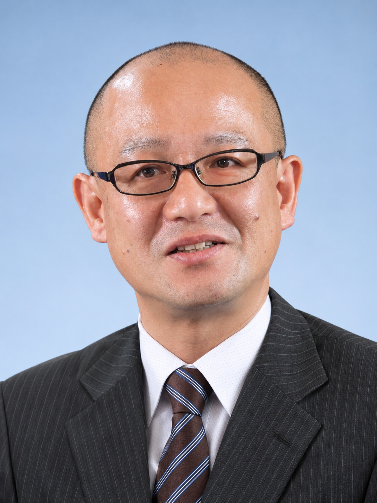

消化管班
鈴木秀和 教授
東海大学 伊勢原図書館長／学校法人東海大学 病院本部長補佐（出向管理）／東海大学医学部付属病院 炎症性腸疾患センター長
消化管は、食物の消化・吸収を担うだけでなく、腸内細菌叢、免疫、神経、代謝などを介して全身の健康と密接に関わる重要な臓器です。私はこれまで、ヘリコバクター・ピロリ感染と胃癌予防、機能性消化管疾患、炎症性腸疾患（IBD）、消化管微生物叢などを中心に、臨床と研究の両面から消化器病学の発展に取り組んできました。近年は、消化管を一つの「エコシステム」として捉え、消化管と脳の相互作用や、人工知能（AI）を活用した疾患予測・個別化医療など、新たな研究領域にも挑戦しています。消化管班では、上部・下部消化管疾患の幅広い診療を基盤として、内視鏡診断・治療、炎症性腸疾患、消化管運動・機能異常など、それぞれの専門性を深めることができます。若手の先生方には、まず患者さんを総合的に診る確かな臨床力を身につけ、そのうえで日々の診療から生まれる疑問を大切にしてほしいと考えています。その疑問を臨床研究や基礎研究につなげ、得られた成果を再び患者さんの診療に還元することこそ、大学病院で学ぶ大きな意義です。また、国内外の多くの研究者との共同研究や学術交流を通じて、若手医師が国際学会での発表や英語論文の執筆に挑戦し、世界に向けて新しい知見を発信できる環境づくりにも力を注いでいます。臨床を究めたい先生、研究に挑戦したい先生、将来は国際的に活躍したい先生、それぞれの目標を大切にしながら成長を支援したいと考えています。ぜひ私たちと一緒に、消化器病学の新しい可能性を切り拓いていきましょう。

半田修 教授
東海大学医学部付属病院 内視鏡室長
内視鏡室室長として、日々の内視鏡診療と若手医師の教育に取り組んでいます。東海大学医学部付属病院は、神奈川県西部のハイボリュームセンターとして、多様な症例の内視鏡検査・治療を担っています。この豊富な診療経験を教育につなげ、一人ひとりの習熟度に合わせて、基本的な観察・診断から治療手技まで段階的に学べるよう指導しています。手技の習得に加え、適応の判断や患者さんへの配慮も含め、安全で丁寧な内視鏡診療を実践できる医師の育成を目指しています。また、潰瘍性大腸炎やクローン病などの炎症性腸疾患（IBD）では、内視鏡による評価と継続的な診療を結びつけて考えることが重要です。炎症性腸疾患センターの一員として、IBD診療を軸に、診断から内視鏡評価、治療方針の検討、長期的な経過観察まで、包括的な消化管診療の教育に取り組んでいます。患者さんの生活にも目を向けながら、一連の診療を通じて幅広い臨床力を身につけられるよう指導しています。内視鏡やIBD診療に関心のある先生方と、ともに学べることを楽しみにしています。研究では、ピロリ菌除菌後の胃内細菌叢、IBDにおける腸内細菌解析、サイトカインプロファイルを活用した個別化医療、生活習慣と消化器がんの関わりなど、多彩な臨床・基礎研究を手がけています。診療での疑問を研究につなげたい先生や、こうしたテーマに興味のある先生は、ぜひご相談ください。

肝臓班
加川建弘 教授
東海大学医学部付属病院 肝疾患医療センター長
当院は神奈川県が指定する肝疾患診療連携拠点病院として、地域の肝疾患医療の中心的な役割を担っています。ウイルス性肝疾患に対する抗ウイルス療法をはじめ、肝硬変、肝がん、自己免疫性肝疾患、脂肪性肝疾患、肝嚢胞性疾患など、幅広い肝疾患の診療に取り組んでいます。神奈川県西部の中核施設として、地域の医療機関から紹介される難治例にも対応し、患者さん一人ひとりの病態に応じた最適な治療を目指しています。特に、門脈圧亢進症に伴う難治性静脈瘤に対しては、放射線科と連携し、血管内治療や内視鏡治療を積極的に行っています。若手の先生方には、薬物療法から高度な専門的手技まで、幅広い診療を経験していただきたいと考えています。単に手技を習得するだけでなく、病態を理解し、治療適応を適切に判断し、治療後の経過まで責任を持って診療できる力を養うことを重視しています。多様な症例を通じて、肝臓専門医としての実践力を身につけていただければと思います。また、基礎研究にも積極的に取り組んでいます。加川研究室では、胆汁酸代謝や胆汁分泌の調節機構、肝内胆汁うっ滞の病態解明を中心に、胆汁酸と脂質代謝、腸内細菌との相互作用などについて研究を進めています。臨床で生まれた疑問を基礎研究につなげ、その成果を新たな診断や治療へと発展させることを目指しています。肝疾患診療を幅広く学びたい先生、専門的な診療技術を身につけたい先生、大学院で研究に取り組みたい先生を歓迎します。ぜひ私たちと一緒に、肝臓病学の奥深さと面白さを学んでいきましょう。

胆膵班
岩崎栄典 教授
領域主任教授 ／ 東海大学医学部付属病院 消化器内科 診療科長
胆膵班では岩崎とスタッフ3名が担当しており、消化器内科医師としてのトレーニングに加えて、胆道・膵臓疾患の診断から内視鏡治療、薬物療法を中心として胆膵専門医の育成を目指しています。胆膵領域は、緊急性の高い疾患への対応から、精密な診断、高度な治療手技、がん診療まで、幅広い知識と判断力が求められる分野です。当班では、多数の症例と処置件数を背景に、ERCPやEUSの基本を大切にしながら、困難な胆管・膵管処置、EUS関連処置、重症膵炎に伴う局所合併症に対する内視鏡処置、乳頭部腫瘍に対する内視鏡的乳頭切除術など、専門性の高い診療に取り組んでいます。また、膵がん・胆管がんに対する化学療法にも携わり、内視鏡処置だけでなく、病状や生活背景を踏まえた治療選択、副作用への対応、患者さんやご家族への説明まで、がん診療を総合的に学んでいただきたいと考えています。若手の先生方には、一人ひとりの経験や習熟度に応じて、指導医のもとで実際の診療や手技に主体的に関わっていただきます。また、日々の臨床で生まれた疑問を研究に発展させ、学会発表や論文作成に取り組むことも支援します。将来の診療や研究、国内外での研修につながる力を身につけられるよう指導いたします。胆膵領域を深く学びたい先生、高度な内視鏡治療やがん診療に挑戦したい先生を歓迎します。診療・研修や研究活動については、胆膵班のホームページもぜひご覧ください。

八王子病院消化器内科
鈴木孝良 教授
東海大学医学部付属八王子病院 病院長 ／ 消化器内科学教授
東海大学医学部付属八王子病院の消化器内科は、消化管、肝臓、胆道、膵臓まで、消化器内科のすべての領域を幅広くカバーし、地域医療の最前線で診療を行っています。一般的な消化器疾患から、消化器救急、悪性腫瘍、炎症性腸疾患（IBD）などの専門性の高い疾患まで、多彩な症例を経験できることが当科の大きな特徴です。内視鏡検査・治療をはじめ、さまざまな診断・治療手技を実践する機会も豊富にあります。若手医師の教育では、豊富な臨床経験を通じて、幅広い診療能力と専門性の両方を身につけることを大切にしています。経験豊かな指導医が一人ひとりの成長に寄り添い、診断から治療方針の決定、治療後の管理まで、自ら考え実践できる医師の育成を目指しています。また、日々の診療で生まれた疑問を臨床研究につなげ、学会発表や論文作成に取り組むことも積極的に支援しています。私自身は、消化器内視鏡による診断治療や炎症性腸疾患、消化性潰瘍、小腸粘膜傷害、腸内細菌叢などを中心に臨床・研究に取り組んできました。専門性を深めると同時に、患者さんを総合的に診る視点を持ち、患者さんに寄り添える「良医」を育てたいと考えています。臨床が好きな先生、若いうちに多くの症例や手技を経験したい先生、専門性を磨きながら研究にも挑戦したい先生を歓迎します。ぜひ八王子病院で、ともに学び、ともに成長していきましょう。
